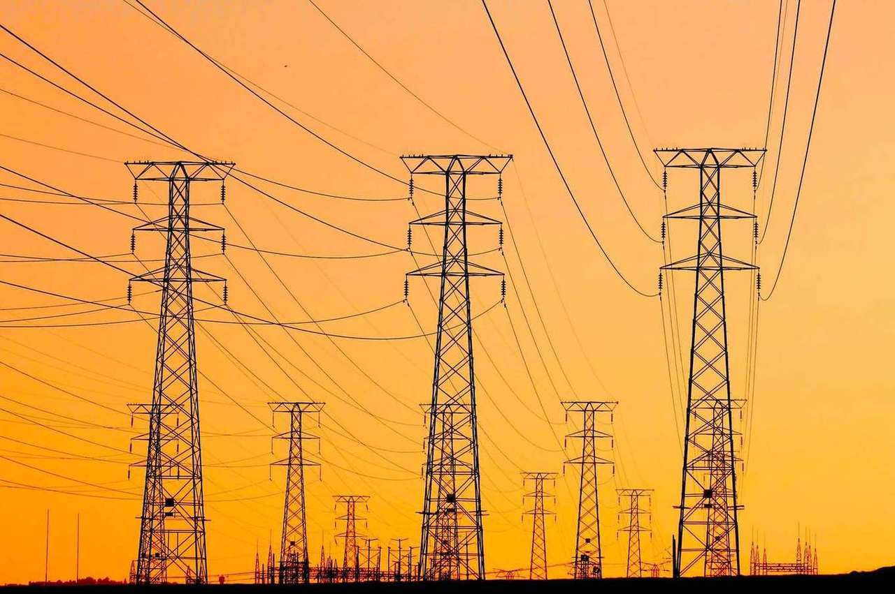
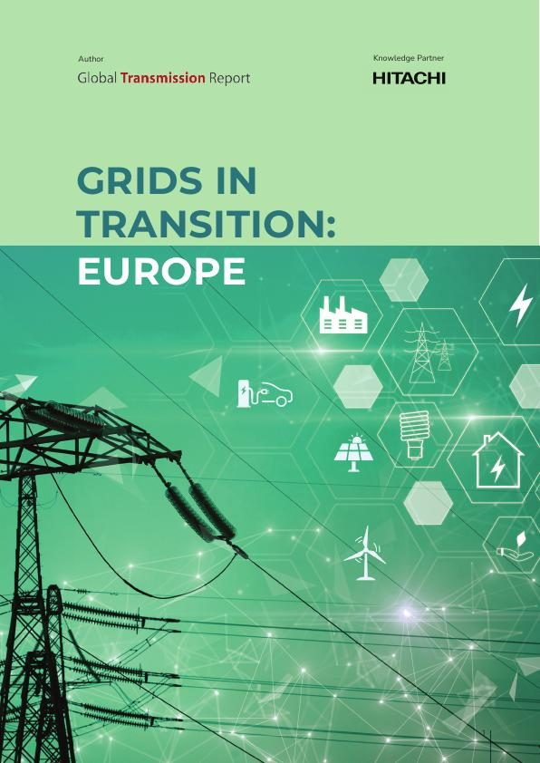

Europa decidió que el viento es una política de seguridad. Ahora necesita los cables.
Tras las crisis energéticas de los últimos años, Europa dejó de ver las renovables como una medida climática y empezó a verlas como una protección. Eso cambió lo que se le pide a la red.
Hay un cambio silencioso en cómo habla Europa de la eólica y la solar. Hace unos años eran la respuesta climática. Ahora también son la respuesta de seguridad energética: energía que nadie puede cortar desde fuera, a un precio que nadie puede secuestrar.
Esa decisión es popular y está funcionando. Pero viene con una condición que nadie pone en un cartel. Toda esa electricidad nueva, barata y propia tiene que conectarse, transportarse y equilibrarse, y la red que lo hace se construyó para un siglo muy distinto.
A qué velocidad cambia el mix
La Agencia Internacional de la Energía prevé que la eólica y la solar representen alrededor del 46% de la capacidad de generación de la UE en 2030, frente al 30% en 2025. Gran Bretaña se ha puesto una cuenta más difícil: para alcanzar su objetivo de un 95% de electricidad baja en carbono en 2030, la eólica y la solar deben aportar entre el 77 y el 82% de la generación, frente al 36% actual.
Al mismo tiempo, las antiguas centrales térmicas que estabilizaban el sistema se están cerrando, y millones de pequeñas fuentes, placas en los tejados, baterías, coches eléctricos, se suman desde los extremos. La red ya no son unas pocas grandes centrales que alimentan una demanda previsible. Es un sistema enorme, rápido y bidireccional.
Por qué la factura aparece en tu precio de la electricidad
El propio Plan de Acción de Electrificación de la Comisión Europea señala a los culpables de los altos precios de la electricidad, y ninguno es la falta de generación limpia. Son una planificación insuficiente de la red, la congestión, el escaso almacenamiento y la escasa flexibilidad. Es decir: la energía está, el cable no. El operador del sistema británico llegó a la misma conclusión y advirtió de que retrasar el refuerzo de la red solo traslada el coste a los consumidores más adelante.
El informe describe cinco presiones que llegan a la vez: una demanda que crece y es más difícil de prever, renovables variables, centrales térmicas que cierran, recursos distribuidos y amenazas cibernéticas, climáticas y físicas cada vez mayores. Presionan a la vez sobre cinco partes del sistema: su capacidad, estabilidad, fiabilidad, flexibilidad y resiliencia.
Cómo es una red construida para esto
Planifica entre fronteras, no dentro de ellas. Usa la tecnología para transportar más por las líneas que ya existen y para mantener estable un sistema lleno de inversores. Asegura los equipos con años de antelación. Y paga el cable igual que paga el parque eólico: como infraestructura, no como algo secundario.
Este es el terreno de Hitachi Energy. La empresa construye los enlaces marinos de TenneT junto a Larsen & Toubro, el primer sistema HVDC multiterminal de Europa en Shetland y, con Elmed, el primer enlace HVDC de la historia entre Europa y el norte de África. Europa tomó la decisión. Los cables son la forma de cumplirla.

Redes en transición: Europa
El informe completo sobre las cinco presiones que transforman la red europea y las tecnologías, la planificación y las reformas de mercado que le permiten seguir el ritmo.